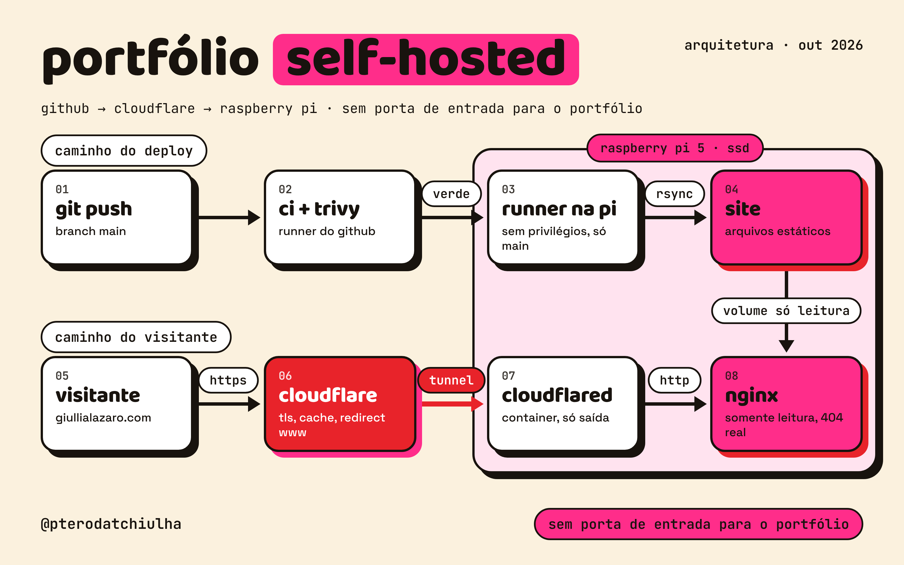

Olá, sou a Giullia
Engenheira DevOps apaixonada por automação e performance em pipelines. Tenho experiência em configurar e escalar processos de CI/CD, com foco em eficiência, estabilidade e entrega contínua. Em meus projetos recentes, automatizei desde a geração de chaves SSH para facilitar o onboarding de desenvolvedores, até pipelines complexas de build para jogos em Unreal Engine 5, usando GitHub Actions, runners dedicados e ferramentas de linha de comando no macOS. Busco sempre reduzir o tempo entre desenvolvimento e entrega, entregando soluções escaláveis, seguras e bem documentadas.

O site giullialazaro.com saiu da AWS (S3, CloudFront, Route 53 e ACM) e passou a rodar em um Raspberry Pi 5, publicado pela Cloudflare por um tunnel. Nenhuma porta de entrada é aberta para o portfólio: o container cloudflared só faz conexões de saída. A entrega continua automática: um push na branch main passa pelo CI com Trivy e, se tudo estiver verde, um runner self-hosted no próprio Pi atualiza o site.
O repositório é público, então o caminho de deploy é a parte que mais precisa de cuidado. O deploy só roda depois de um CI bem-sucedido, em um push na main do próprio repositório, nunca a partir de um fork. Pull requests de fora exigem aprovação antes de rodar qualquer workflow. O runner no Pi não tem acesso ao Docker nem a permissões de administrador e só consegue escrever na pasta do site; o serviço ainda roda com restrições do systemd. O segredo do tunnel fica fora do Git, em um arquivo com permissão restrita.
As páginas da versão AWS continuam no ar como histórico: arquitetura AWS e deploy com Terraform.
Hospedar em casa não é só rodar um container: é decidir o que fica exposto, quem pode publicar e o que acontece se uma dessas peças for comprometida. Cada escolha acima parte dessa pergunta.